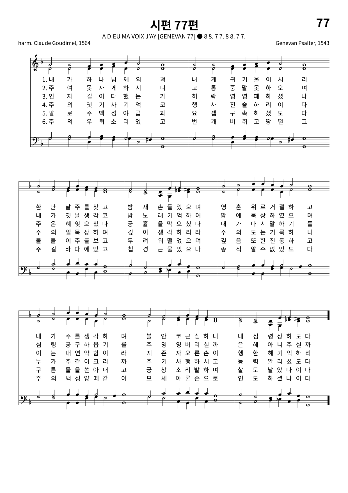

시편 77편
A DIEU MA VOIX J’AY [GENEVAN 77] · 8 8. 7 7. 8 8. 7 7.
곡조: Genevan Psalter, 1543 · 화성: Claude Goudimel, 1564 · 가사: 개역한글판 시편 77편 편역(AI 초벌 편역판 · 신학 감수 전) · 6절
악보 PDF MusicXML(출력용) MusicXML(반주용, 전주·반복 포함) 개역한글 시편 77편 읽기
악보
← 시편 76편 목록반주 재생(준비 중)시편 78편 A →
가사
1절 (시편 1-3)
내가 하나님께 외쳐
내게 귀 기울이시리
환난 날 주를 찾고
밤새 손 들었으며
영혼 위로 거절하고
내가 주를 생각하며
불안코 근심하니
내 심령 상하도다
내가 하나님께 외쳐
내게 귀 기울이시리
환난 날 주를 찾고
밤새 손 들었으며
영혼 위로 거절하고
내가 주를 생각하며
불안코 근심하니
내 심령 상하도다
2절 (시편 4-7)
주여 못 자게 하시니
고통 중 말 못하오며
내가 옛날 생각코
밤 노래 기억하여
맘에 묵상하였으며
심령 궁구하옵기를
주 영영 버리실까
은혜 아니 주실까
주여 못 자게 하시니
고통 중 말 못하오며
내가 옛날 생각코
밤 노래 기억하여
맘에 묵상하였으며
심령 궁구하옵기를
주 영영 버리실까
은혜 아니 주실까
3절 (시편 8-10)
인자 길이 다했는가
허락 영영 폐하셨나
주 은혜 잊으셨나
긍휼을 막으셨나
내가 다시 말하기를
이는 내 연약함이라
지존자 오른손이
행한 해 기억하리
인자 길이 다했는가
허락 영영 폐하셨나
주 은혜 잊으셨나
긍휼을 막으셨나
내가 다시 말하기를
이는 내 연약함이라
지존자 오른손이
행한 해 기억하리
4절 (시편 11-14)
주의 옛 기사 기억코
행사 진술하리이다
주의 일 묵상하며
깊이 생각하리라
주의 도는 거룩하니
누가 주 같이 크리까
주 기사 행하시고
능력 알리셨도다
주의 옛 기사 기억코
행사 진술하리이다
주의 일 묵상하며
깊이 생각하리라
주의 도는 거룩하니
누가 주 같이 크리까
주 기사 행하시고
능력 알리셨도다
5절 (시편 15-17)
팔로 주 백성 야곱과
요셉 구속하셨도다
물들이 주를 보고
두려워 떨었으며
깊음 또한 진동하고
구름 물을 쏟아 내고
궁창 소리 발하며
살도 날았나이다
팔로 주 백성 야곱과
요셉 구속하셨도다
물들이 주를 보고
두려워 떨었으며
깊음 또한 진동하고
구름 물을 쏟아 내고
궁창 소리 발하며
살도 날았나이다
6절 (시편 18-20)
주의 우뢰 소리 있고
번개 비취고 땅 떨고
주 길 바다에 있고
첩경 큰 물 있으나
종적 알 수 없었도다
주의 백성 양떼 같이
모세 아론 손으로
인도하셨나이다
주의 우뢰 소리 있고
번개 비취고 땅 떨고
주 길 바다에 있고
첩경 큰 물 있으나
종적 알 수 없었도다
주의 백성 양떼 같이
모세 아론 손으로
인도하셨나이다